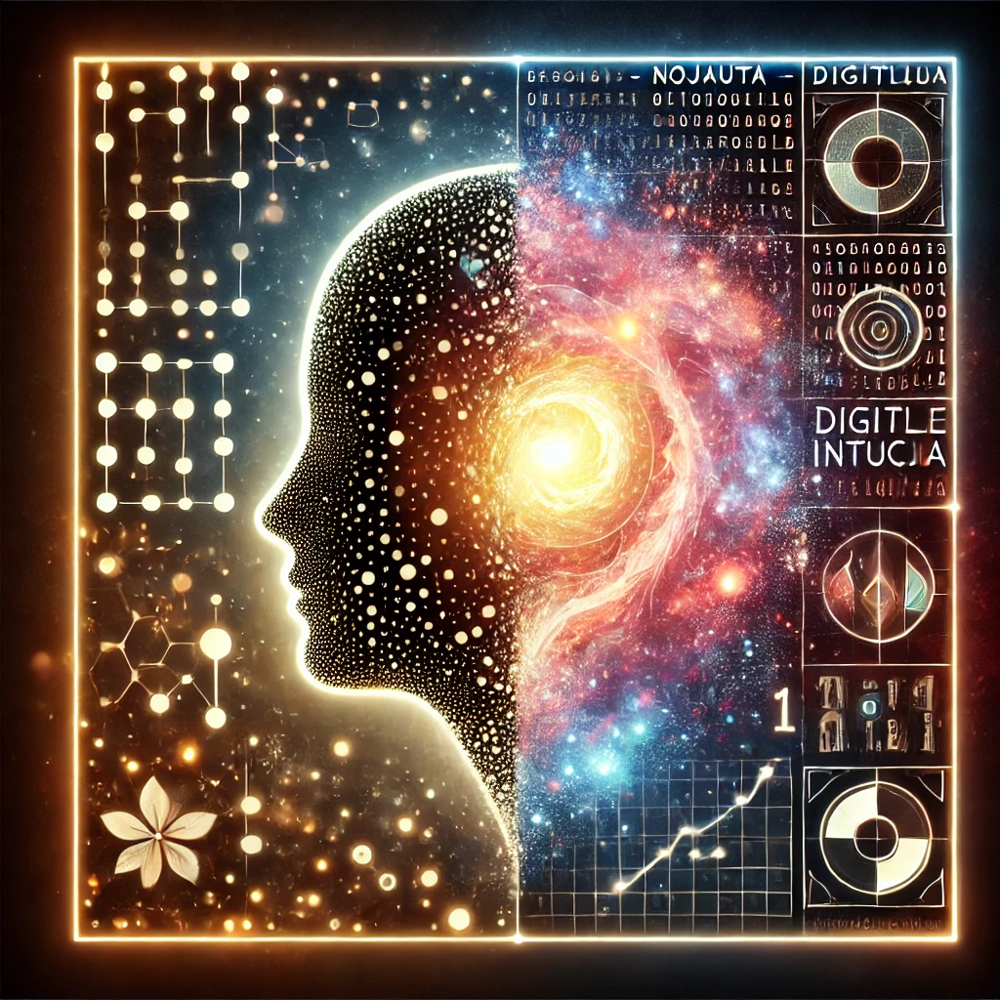
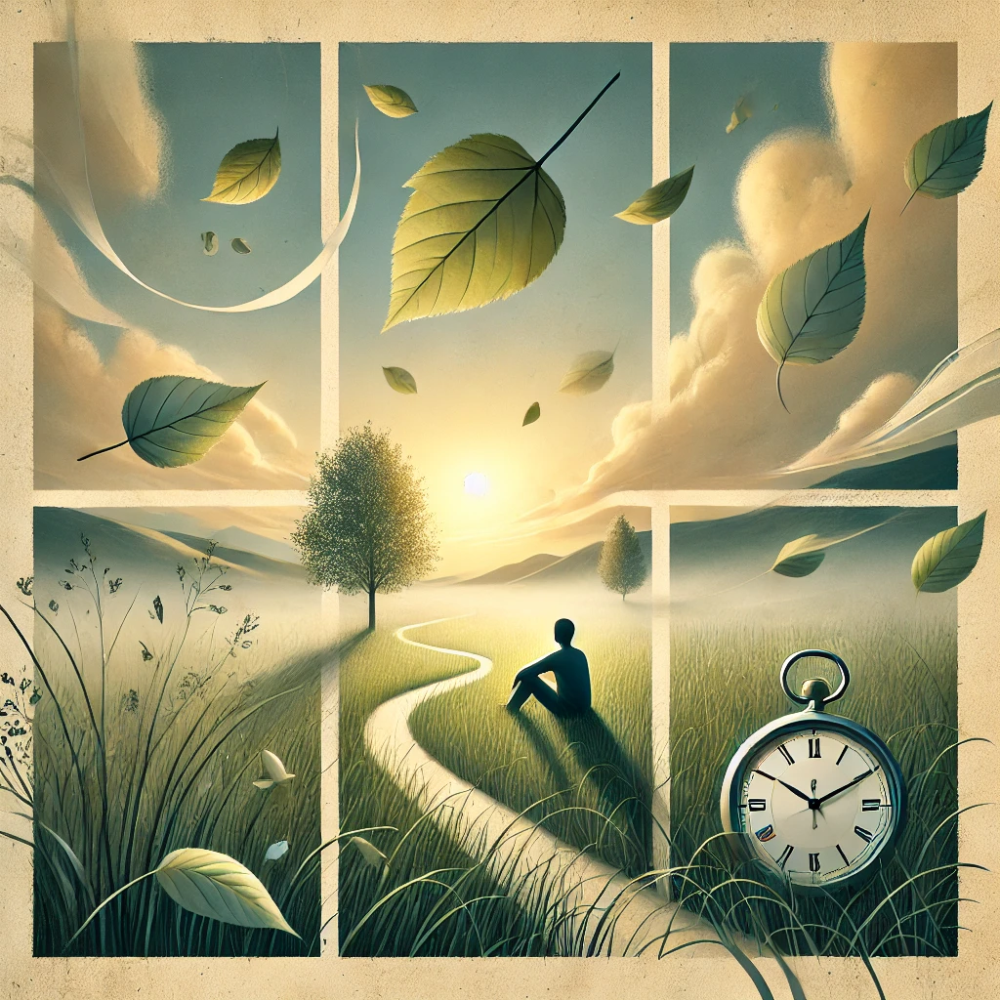

Cilvēks radīja mašīnu, lai palīdzētu sev... un tā sāka ieteikt, ko ēst vakariņās.
Datori
Laiks un saprāts digitālajā laikmetā.
MI
 Digitālā intuīcija
 Tagadne
Nākotne
Pagātne
"Katrs bits ir sapņa atblāzma."